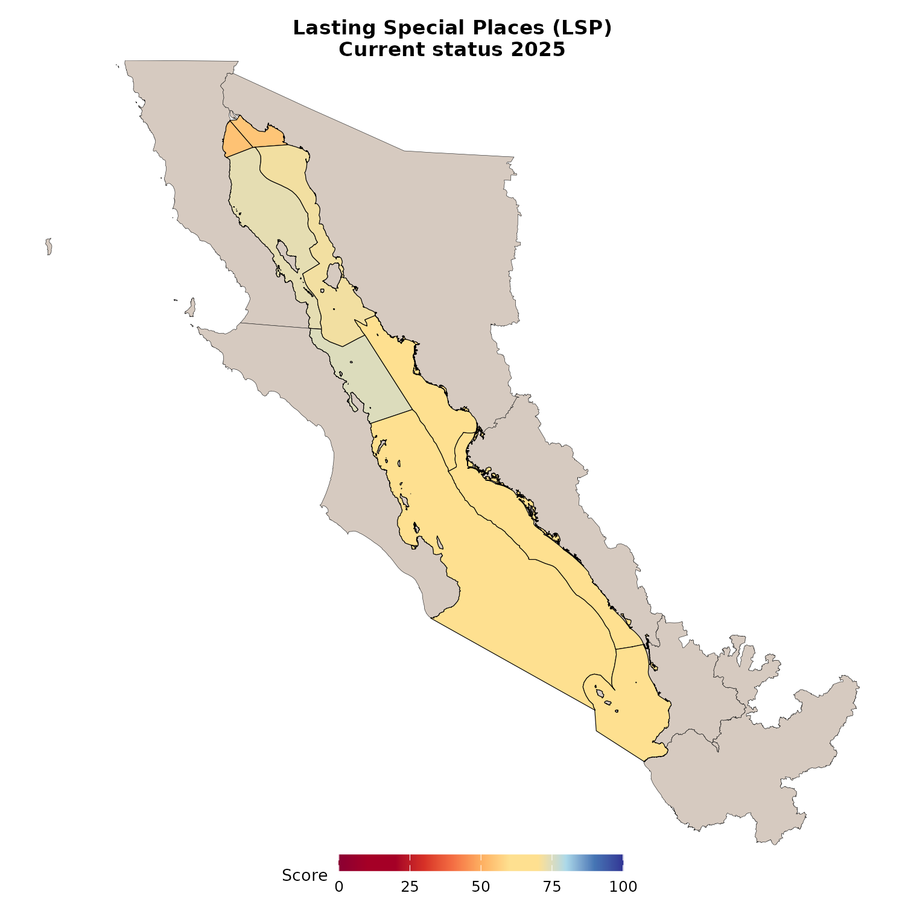

Project Update (Fall 2026)
We are excited to share where the Gulf of California Ocean Health Index currently stands. Expert Working Groups 1, 2, and 3 (including 3.1 to 3.3) are now complete, and the plots below show each goal’s Current Status by OHI region. Current Status is current condition divided by the reference point (current / reference). If you would like, you can hover your mouse over each plot to compare regions and years. A score of 100 means that current condition equals the reference point.
This is a snapshot of work in progress. Scores, methods, and write-ups will continue to be updated as we finish pressures (including Safety & Security), finalize the goals, and complete the resilience layers. Specific data sources and reference points for each goal are described in detail in that goal’s executive summary.
| Date | OHI assessment | Paper |
|---|---|---|
| September 30 | Finish pressures (including Safety & Security) and finalize goals | Finalize goals / work on paper |
| October 30 | Finish resilience | Work on paper |
| November 13 | Send OHI draft to the core team and co-authors | Work on paper |
| December 4 | Deadline for all co-authors to provide feedback | Work on paper |
| January 1 | Submit OHI paper | Finalize paper |
Here is which goals we talked through at each Expert Working Group meeting:
- July 16 (EWG 3.1): Tourism & Recreation, Food Provisioning, and Livelihoods & Economies
- August 13 (EWG 3.2): Sense of Place, Access Opportunities, and Habitat Services
- September 10 (EWG 3.3): Biodiversity, Clean Waters, and Natural Products
 Tourism & Recreation
Tourism & Recreation
The overall TR score is the average of Quantity, Quality, and Sustainability. A score of 100 reflects that all three components have reached their reference points. Open the component scores below to see what is pulling a region up or down.
Cruise ships are shown separately and are not included in this overall score.
Figure 1. Interactive graph depicting this goal’s current status over time per OHI region. The scores shown here are not finalized (version 1.0; September, 2026).
📊 Component scores
This is the Quantity component, which evaluates whether international and domestic tourism is reaching the targets set by Plan México for 2030.
Figure 2. Interactive graph depicting this goal’s current status over time per OHI region. The scores shown here are not finalized (version 1.0; July, 2026).
This is the Quality component, which evaluates whether visits are safe and well supported by dining, cultural, and recreation services, relative to the best conditions observed in the Gulf.
Figure 3. Interactive graph depicting this goal’s current status over time per OHI region. The scores shown here are not finalized (version 1.0; July, 2026).
This is the Sustainability component, which evaluates whether tourism is supported by certified hotels and beaches, quality jobs, and public investment at or above recent historical levels. The September scores include the updated hotel-certification list (Distintivo S, Green Key, Green Globe, Earthcheck, Preferred by Nature, and Calidad Ambiental Turística / PNAA).
Figure 4. Interactive graph depicting this goal’s current status over time per OHI region. The scores shown here are not finalized (version 1.0; September, 2026).
🚢 Cruise ships (not scored)
Cruise activity should be in Tourism & Recreation, but it is not scored in the September overall TR score and will still be highlighted, but left as NA. This is because the directionality of the reference point is not obvious. México has not said cruise tourism should increase or decrease, and while cruise lines support local tourism economy,many locals want it to decrease. A 7- to 10-hour port stop is also a different timeframe from a typical overnight tourist visit, and passengers are not split by domestic versus international visitors, so it does not fit well into the Quantity component.
That said, as it was highlighted by experts as important to explore, we investigated using the average 2016–2019 baseline as the maximum. Therefore, if in a given year and region there were more passengers than that mean, the current status score would lower. However, we encountered and read mixed opinions regarding cruises, and it became clear that there should be a future working group to define what sustainability looks like for Gulf cruises before we incorporate this into the Index.
It should still be emphasized as a potential problem/area of need, especially in the Western Southern Gulf, which a high rate of increase of passengers per port post-COVID. Additionally, intensified cruise tourism has also been linked to biological effects on whale shark habitat (Mongabay, May 2025).
The plots below show the data for discussion. They are not in the overall TR current status score.
Annual cruise passengers by OHI region (SECTUR port statistics, GoC ports only):
Figure 5. Interactive graph depicting annual cruise passengers per OHI region. These data are shown for discussion and are not included in the September 2026 Tourism & Recreation score.
Cruise passengers per coastal resident (same coastal-municipal population as TR Quality):
Figure 6. Interactive graph depicting cruise passengers per coastal resident per OHI region. These data are shown for discussion and are not included in the September 2026 Tourism & Recreation score.
Exploratory score: annual passengers per coastal resident compared with the 2016–2019 mean (where more passengers than that baseline = lower score). A score of 100 means passenger density is at or below the 2016–2019 mean.
Figure 7. Interactive graph depicting an exploratory cruise-pressure score (inverted 2016 to 2019 mean). These scores are not included in the overall Tourism & Recreation score. The scores shown here are not finalized (version 1.0; September, 2026).
📚 Data Sources & Methods
This goal uses several data sources across Quantity, Quality, and Sustainability:
- Quantity: SECTUR DataTur hotel monitoring reports for domestic and international arrivals. Where a municipality is missing from DataTur, we fill the gap with INEGI DENUE hotel employee models.
- Quality: SESNSP municipal crime statistics, INEGI municipal population (crime per person), and INEGI DENUE dining, cultural, and recreation businesses within 50 km of the coast.
- Sustainability: hotel certifications (Distintivo S, Green Key, Green Globe, Earthcheck, Preferred by Nature, and Calidad Ambiental Turística / PNAA: Certificados Expedidos 2025); FEE Blue Flag beaches with INEGI coastline and beach linework; CONANP public investment plus SHCP / NOSSA fee returns; and INEGI Censos Económicos for tourism job quality.
- Cruise ships (shown, not scored): SECTUR cruise port statistics (passengers and arribos), joined to OHI regions, with INEGI coastal municipal population for the per person plots.
Methods, reference points, and indicator details are in the executive summary:
- English: TR Executive Summary
- Spanish: TR Resumen ejecutivo
🔗 Goal Resources
- EWG 3.1 page: Tourism & Recreation · meeting notes: July 16
- Goalkeeper page: Tourism and Recreation
- English: TR Executive Summary
- Spanish: TR Resumen ejecutivo
⏭️ Next Steps
Upcoming Adjustments (from EWG 3.1)
- Done: incorporate Earthcheck, Preferred by Nature, and Calidad Ambiental Turística / PNAA (Certificados Expedidos 2025) into the hotel certification component. The September scores use this updated list.
- In progress: Explore integrating an indicator within the “Investment in potential tourism management” component of TR Sustainability that reflects the number of employees per hectare of GOC protected areas.
- We will integrate this in one of two ways in the future:
- SIMEC i-efectividad C2 and C3. Include CONANP’s SIMEC (Sistema de Información, Monitoreo y Evaluación para la Conservación) i-efectividad scores for C2 Administrativo y financiero and C3 Usos y beneficios into this subcomponent, together with federal CONANP budgets (V003 and V005) and returned cobro de derechos. The CONANP budgets would still show change over years. SIMEC would show differences across regions (the available reports are about 2021 to 2022, so those scores would be held constant until SIMEC is updated).
- C2 Administrativo y financiero covers presupuesto (sufficiency, security of funding, and budget management), personal (staff sufficiency, training, and staff security), equipamiento, mantenimiento del equipo, infraestructura de manejo, and cobro de derechos.
- C3 Usos y beneficios covers beneficios económicos, producción sustentable, uso / aprovechamiento sustentable (terrestre and marine-coastal ANPs), and infraestructura para visitantes.
- Employees in protected areas. Use the number of employees in each protected area over time, compared with the global ideal personnel density from Appleton et al. (2022), Protected area personnel and ranger numbers are insufficient to deliver global expectations (Nature Sustainability; see Fig. 5, global terrestrial protected area personnel densities).
- We are waiting to hear back from CONANP through a Plataforma Nacional de Transparencia request to obtain the annual employee data specific to each protected area. CONANP must respond by September 23, 2026.
- Done: If time allows – investigate adding cruise ship data (annual passengers and port stops) into the TR Quantity component. The main difficulty is the reference point, since we cannot tell from the data whether passengers are international or domestic, and a 7- to 10-hour port stop does not equate to a typical tourist’s length of stay.
- For now, we decided to keep the cruise data separate (see the dropdown above). In the future a working group should define cruise sustainability metrics (vessel size, enforcement, ports per region). Until then, we will leave cruises as NA in the TR score.
Food Provisioning
Figure 8. Interactive graph depicting this goal’s current status over time per OHI region. The scores shown here are not finalized (version 1.0; September, 2026).
📊 Component scores
This goal has two components. We will add a plot for each one here as soon as those files are ready.
- Wild catch (FIS): CONAPESCA landings (Mex-Fisheries clean version), with stock status from RAM, then Carta Nacional Pesquera, then CMSY.
- Mariculture (MAR): CONAPESCA aquaculture production, with Monterey Bay Aquarium Seafood Watch as a sustainability coefficient.
📚 Data Sources & Methods
Food Provisioning measures seafood that is sustainably produced by wild catch fisheries and mariculture.
- Wild catch (FIS): CONAPESCA landings, using the cleaned Mex-Fisheries version from the University of Miami. Stock status comes first from the RAM stock assessment database, then from Mexico’s Carta Nacional Pesquera, then from CMSY when we have no better option. We also use catch per unit effort from CONAPESCA permit holders.
- Mariculture (MAR): CONAPESCA aquaculture production (shrimp, bivalves, and finfish), with Monterey Bay Aquarium Seafood Watch scores as a sustainability coefficient. The production target follows the Programa Nacional de Pesca y Acuacultura (20% growth over five years).
- Fishing records are assigned to OHI regions using geospatial keys from Cavieses-Nuñez, Morzaria-Luna, and colleagues (2025).
Methods, reference points, and indicator details are in the executive summary:
- English: FP Executive Summary
- Spanish: FP Resumen Ejecutivo
🔗 Goal Resources
- EWG 3.1 page: Food Provisioning · meeting notes: July 16
- Goalkeeper page: Food Provisioning
- English: FP Executive Summary
- Spanish: FP Resumen Ejecutivo
⏭️ Next Steps
Upcoming Adjustments (from EWG 3.1)
- Drop CPUE sub-scores, which — for the most part — inflate the FIS and FP scores.
- Modify the FIS sub-scores with a sustainability scalar as needed and if possible.
- Clarify to reviewers, readers, and index users that these numbers compress and therefore miss important regional context in favor of indicators that can be compared across regions; scores may be higher than expected due to lack of regional context as well as intentional and unintentional misreporting of fisheries data at the state and federal level; and these methods do not allow for a holistic evaluation of seafood sustainability at the ecological community level. Community-composition metrics can and likely should be integrated into future versions of the index.
 Livelihoods & Economies
Livelihoods & Economies
The September scores include an update to LIV quantity and quality: both are adjusted for informality with a state and sector ENOE multiplier. Economies (ECO) is still formal marine-related revenue only. Open the component scores below to see jobs, job quality, and revenue separately.
Figure 9. Interactive graph depicting this goal’s current status over time per OHI region. The scores shown here are not finalized (version 1.0; September, 2026).
📊 Component scores
These LIV plots use the informality-adjusted files made after EWG 3.1. ECO has not changed since EWG 3.1. Region 2 is not scored due to a lack of data on Gulf-side marine related jobs.
This is the Livelihoods quantity component (number of marine-related jobs per coastal resident), now including informal workers. A score of 100 means jobs per resident are at or above that region’s 2018 value.
Figure 10. Interactive graph depicting this goal’s current status over time per OHI region. The scores shown here are not finalized (version 1.0; September, 2026).
This is the Livelihoods quality component (employer social security and other benefits per job), also adjusted for informal workers.
Figure 11. Interactive graph depicting this goal’s current status over time per OHI region. The scores shown here are not finalized (version 1.0; September, 2026).
This is the Economies component (formal marine-related revenue). Informal work is not added here, as we did not want to overstate revenue.
Figure 12. Interactive graph depicting this goal’s current status over time per OHI region. The scores shown here are not finalized (version 1.0; September, 2026).
📚 Data Sources & Methods
Livelihoods & Economies measures jobs and revenue from marine-related industries. Livelihoods (LIV) captures the quantity and quality of marine-related jobs. Economies (ECO) captures revenue from marine-related sectors.
- Jobs and revenue: INEGI Censos Económicos (2003, 2008, 2013, 2018, 2023) for marine-related businesses. INEGI population is used so we can talk about jobs per coastal resident, and to adjust regions that span both the Gulf and Pacific coasts. Region 2 is not reported because municipal census data are not enough to isolate Gulf-side activity.
- Informal work (added after EWG 3.1): INEGI ENOE, used to build a yearly state and sector multiplier so LIV quantity and LIV quality include informal marine-related workers. CEPAL’s informal-employment report informed the methodology of our multiplier, however the values from the report itself was too coarse for marine sectors, so we did not use it alone. ECO includes the formal census revenue only.
Methods, reference points, and indicator details are in the executive summary:
- English: LE Executive Summary
- Spanish: LE Resumen ejecutivo
🔗 Goal Resources
- EWG 3.1 page: Livelihoods & Economies · meeting notes: July 16
- Goalkeeper page: Livelihoods and economies
- English: LE Executive Summary
- Spanish: LE Resumen ejecutivo
- Informal-jobs multiplier notes: OHI_GOC_issues #125
⏭️ Next Steps
Upcoming Adjustments (from EWG 3.1)
- Done (in the September scores): include informal marine-related workers in both LIV quantity and LIV quality. We applied a yearly state–sector ENOE multiplier (
jobs_multiplier = 1 / (1 − pct_informal)) to coastal Economic Census jobs. ECO remains formal CE revenue only. - For exploratory purposes, aggregate CONAPESCA fishing and mariculture totals to check against Economic Census revenue estimates.
- Clearly explain the within-region reference point methodology in the report / paper, so that readers do not misinterpret scores for smaller regions doing well (relative to themselves) against larger regions with high absolute revenue.
 Sense of Place
Sense of Place
Sense of Place, aka Sentido de Pertenencia, was originally the average of Coastal Community Engagement (CCE), Lasting Special Places (LSP), and Iconic Species (ICO). After EWG 3.2 we are reworking CCE, so the September 2026 scores below are the average of ICO and LSP only. Open the component scores to see ICO, LSP, the pre-EWG CCE scores, and the pre-EWG overall scores (CCE + LSP + ICO).
Figure 13. Interactive graph depicting this goal’s current status over time per OHI region. The scores shown here are not finalized (version 1.0; September, 2026).
📊 Component scores
These ICO and LSP scores are the same ones used on the EWG 3.2 page. They are the two components averaged in the September 2026 overall score above.
This is the Iconic Species (ICO) component, which evaluates the mean conservation-risk status of culturally iconic species in each region (NOM-059, IUCN, and CITES). A score of 100 means those species are not listed as at risk.
Figure 14. Interactive graph depicting this goal’s current status over time per OHI region. The scores shown here are not finalized (version 1.0; August, 2026).
This is the Lasting Special Places (LSP) component, which evaluates the protection condition of expert-identified special places (protected areas, dive sites, fishing spots, archaeology, habitats, and other places). LSP is a 2025 snapshot (not a time series). The colors appear warmer for from lower scores to cooler for higher scores,on a 0–100 scale.
[1] TRUE
Figure 15. Choropleth map depicting this component’s current status by OHI region (2025 snapshot). The scores shown here are not finalized (version 1.0; August, 2026).
This is the Coastal Community Engagement (CCE) component as scored before EWG 3.2: the average of Ama tu Playa beach adoptions and non-natural cultural places (INEGI DENUE). After the meeting we decided those indicators were too limited, so CCE is being reworked around civic, educational, and social engagement and is not included in the September 2026 overall score.
Notes on the CCE rework:
Figure 16. Interactive graph depicting this goal’s current status over time per OHI region. The scores shown here are not finalized (version 1.0; August, 2026).
For comparison, this is the overall SP score used on the EWG 3.2 page: the average of CCE, LSP, and ICO.
Figure 17. Interactive graph depicting this goal’s current status over time per OHI region. The scores shown here are not finalized (version 1.0; August, 2026).
📚 Data Sources & Methods
Sense of Place measures how well we are sustainably caring for the marine and coastal places and species that provide heritage, shared memory, and identity for Gulf communities.
The September 2026 overall score uses 2 components (ICO and LSP). CCE is being reworked and is held out for now.
- ICO: Expert Working Group iconic species list; occurrence from Morzaria-Luna et al. (2027); risk status from NOM-059, IUCN Red List, and CITES.
- LSP: Expert-identified special places (protected areas, dive sites, fishing spots, archaeology, habitats, and other places). Condition comes from CONANP SIMEC i-efectividad, Ramsar management plans, and protected area polygons (WDPA, CONANP, HEM). Priority dive sites come from Arcos-Aguilar et al. (2021) and CBMC GCMP layers. Archaeology sites come from INAH.
- CCE (shown for EWG 3.2, not in the September 2026 overall): SEMARNAT Ama tu Playa beach adoptions (adoptaunaplaya.com) and INEGI DENUE sector 71 cultural establishments within 10 km of the coast. Rework notes: CCE Finalizing Methods and continued.
Methods, reference points, and indicator details are in the executive summary:
- English: SP Executive Summary
- Spanish: SP Resumen ejecutivo
🔗 Goal Resources
- EWG 3.2 page: Sense of Place · meeting notes: August 13
- Goalkeeper page: Sense of Place
- English: SP Executive Summary
- Spanish: SP Resumen ejecutivo
- ICO list for expert review: (SP) ICO: List for Expert Review
- LSP lists for expert review: (SP) LSP: Lists for Expert Review
- CCE rework notes: CCE Finalizing Methods · continued
⏭️ Next Steps
Upcoming Adjustments (from EWG 3.2)
- Update the ICO scores to reflect changes made by the experts after they reviewed the list: (SP) ICO: List for Expert Review.
- Update the LSP scores to reflect changes made by the experts after they reviewed the lists: (SP) LSP: Lists for Expert Review.
- Restructure CCE around civic, educational, and social engagement. Additional details: (SP) CCE Finalizing Methods. Until CCE is ready, keep overall SP as the average of ICO and LSP.
Access Opportunities
After EWG 3.2 we plan to leave Local Coastal Access (LCA) as NA. We did develop methods to estimate realized access (who can actually reach the beach), but we did not have time to fold them into this first version of the Index. Those methods are described on the Coastal Access: La Paz page. For now, the LCA component is NA so that true coastal access is not misrepresented. You can read more in the executive summary.
The plot below is the overall Access Opportunities score with LCA held out.
Figure 18. Interactive graph depicting this goal’s current status over time per OHI region. The scores shown here are not finalized (version 1.0; September, 2026).
📊 Component scores
This goal has two components. We will add a plot for each one here as soon as those files are ready.
- Artisanal fishing (AFO): the artisanal share of CONAPESCA landings, with stock status from RAM, then Carta Nacional Pesquera, then CMSY.
- Local coastal access (LCA): NA for this first version. After EWG 3.2 we plan to leave LCA as NA. Methods for realized access were developed (see Coastal Access: La Paz), but they are not in the Index yet, so we do not want legal access alone to stand in for true coastal access.
📚 Data Sources & Methods
Access Opportunities (formerly Artisanal Opportunities) measures whether members of coastal communities, including small-scale fishing communities and pueblos originarios, have access to marine resources that allow them to thrive.
- Artisanal fishing (AFO): CONAPESCA landings (Mex-Fisheries clean version), keeping the artisanal share of catch. Stock status uses the same hierarchy as Food Provisioning: RAM assessments, then Carta Nacional Pesquera, then CMSY. Records are assigned to OHI regions with the Cavieses-Nuñez and Morzaria-Luna geospatial keys.
- Local coastal access (LCA): NA for now. We looked at legal protection under ZOFEMAT (Mexico’s federal maritime terrestrial zone), municipal ZOFEMAT offices, local beach inventories, and national PROFEPA enforcement capacity. We also developed methods for realized access, described on the Coastal Access: La Paz page, but we did not have time to integrate them into this first version of the Index. After EWG 3.2 we plan to leave LCA as NA so that true coastal access is not misrepresented. Read more in the executive summary.
Methods, reference points, and indicator details are in the executive summary:
- English: AO Executive Summary
- Spanish: AO Resumen Ejecutivo
🔗 Goal Resources
- EWG 3.2 page: Access Opportunities · meeting notes: August 13
- Goalkeeper page: Access Opportunities
- English: AO Executive Summary
- Spanish: AO Resumen Ejecutivo
- Realized access methods (not in this version): Coastal Access: La Paz
⏭️ Next Steps
Upcoming Adjustments (from EWG 3.2)
- Drop Local Coastal Access (LCA) scores from the final AO scores due to incomplete coastal access data. > COMPLETED
- Locate stock assessment information for jellyfish (agua mala) and integrate it into the AFO calculation. Agua mala are heavily fished in certain Gulf regions like Sonora, and a stock assessment would help calculate the AFO score more accurately.
- Located: thanks Jaqueline for sending the IMIPAS report (2024): La pesquería de medusa bola de cañón (Stomolophus spp.) en Sonora, 2023. This will be added to round out the AO stock assessment scores.
- General note: provide additional context for AFO scores, such as which stocks are driving the scores in which regions.
- LCA is NA. After EWG 3.2 we plan to leave Local Coastal Access as NA. Realized access methods were developed (Coastal Access: La Paz), but they are not in this first version of the Index, so we do not want the score to misrepresent true coastal access.
Habitat Services
Figure 19. Interactive graph depicting this goal’s current status over time per OHI region. The scores shown here are not finalized (version 1.0; September, 2026).
📊 Component scores
Habitat Services is the average of three service scores, built from five habitats. We will add plots for each service here as soon as those files are ready.
- Coastal protection (PRO)
- Pollution control and filtration (FIL)
- Carbon sequestration (SEQ)
The five habitats behind those scores are mangroves, salt marshes, coastal dunes and scrubland, seagrass meadows, and coral reefs.
📚 Data Sources & Methods
Habitat Services (HS) combines Coastal Protection and Carbon Storage. It measures how well coastal habitats protect people and property from flooding and erosion, and how well they store carbon.
We scored five habitats: mangroves, salt marshes, coastal dunes and scrubland, seagrass, and coral reefs.
- Mangroves: current extent from Morzaria-Luna et al. (PRONATURA, INEGI, CONABIO). Change over time from Global Mangrove Watch.
- Salt marsh and dunes: CONABIO vegetation layers, checked against wetland maps from Morzaria-Luna, Munguia-Vega, and colleagues.
- Seagrass: current extent from Morzaria-Luna et al. Condition from published meadow studies (López-Calderón, Ramírez-Zúñiga, Riosmena-Rodriguez).
- Coral reefs: extent from dataMares, the Allen Coral Atlas, and Morzaria-Luna et al. Condition from reef monitoring in the literature, including new Nayarit information from Dr. Cupul.
Methods, reference points, and indicator details are in the executive summary:
- English: HS Executive Summary
- Spanish: HS Resumen Ejecutivo
🔗 Goal Resources
- EWG 3.2 page: Habitat Services · meeting notes: August 13
- Goalkeeper page: Habitat services (CP & CS)
- English: HS Executive Summary
- Spanish: HS Resumen Ejecutivo
- Literature review: coastal protection, pollution filtration, and carbon sequestration per habitat type
⏭️ Next Steps
Upcoming Adjustments (from EWG 3.2)
- Done: Revisit and revise our work on “salt marsh” and “coastal dune & scrubland” to reflect “coastal wetlands” more broadly. Thanks Rick, Hem, and Jorge for your guidance on this.
- Integrate new information about the condition of coral reefs in Nayarit (Region 9, Southeastern Gulf).
- Done: thanks Dr. Cupul for your help on this.
- Integrate Dr. Reyes’ coral reef [condition] data from the southern GOC. Report acquired!
- We also wanted to share our literature review on coastal protection, pollution filtration, and carbon sequestration per habitat type here.
 Biodiversity
Biodiversity
Figure 20. Interactive graph depicting this goal’s current status over time per OHI region. The scores shown here are not finalized (version 1.0; September, 2026).
📊 Component scores
Biodiversity currently evaluates 8 biomes. We will add a plot for each one here as soon as those files are ready.
- Mangrove forests (MAN)
- Coastal wetlands and scrubland (WET)
- Seagrass meadows (SEA)
- Coral reefs (CRL)
- Rocky reefs (ROK)
- Subtidal soft bottom (SOF)
- Rhodolith beds (RHO)
- Shallow pelagic open ocean (OCE)
📚 Data Sources & Methods
Biodiversity measures the current status of key biomes as proxies for species diversity, abundance, and ecosystem function. We currently evaluate 8 biomes. Each one has its own data.
- Mangroves: Morzaria-Luna et al. (PRONATURA, INEGI, CONABIO) and Global Mangrove Watch.
- Coastal wetlands and scrub: CONABIO vegetation layers, checked with Morzaria-Luna and Munguia-Vega wetland maps.
- Seagrass: Morzaria-Luna et al., plus published meadow studies.
- Coral reefs: dataMares, Allen Coral Atlas, Morzaria-Luna et al., and reef surveys.
- Rocky reefs: Morzaria-Luna rocky reef layer and Favoretto et al. (2024) Normalized Reef Status Index.
- Soft bottom: VMS trawling pressure from Juan Carlos Villaseñor (Mexico’s SISMEP data).
- Rhodoliths: Morzaria-Luna rhodolith layer, with the same VMS trawling pressure (scaled up because one trawl can hurt a bed for years).
- Open ocean: CONAPESCA landings for fished groups, plus published surveys for sharks, cetaceans, pinnipeds, sea turtles, and seabirds.
Methods, reference points, and indicator details are in the executive summary:
- English: BD Executive Summary
- Spanish: BD Resumen Ejecutivo
🔗 Goal Resources
- EWG 3.3 page: Biodiversity · meeting notes: September 10
- Goalkeeper page: Biodiversity
- English: BD Executive Summary
- Spanish: BD Resumen Ejecutivo
⏭️ Next Steps
Upcoming Adjustments (from EWG 3.3)
- Soft-bottom benthic habitats (SOF): separate this biome type into two distinct biome types: coastal shelf soft-bottom benthos (< 100 m) and deep soft-bottom benthos (> 100 m), both of which could be exposed to trawling but at different rates. Currently, the low trawl frequency in the deep sea is drowning out the high trawl frequency in the coastal benthos.
- Rhodolith beds (RHO): filter out / mask rhodolith beds > 100 m, as these are almost certainly not real rhodolith beds (they may be cobbles misclassified as rhodoliths by ROVs).
- Rocky reefs (ROK): push to include rocky-reef data in the upper and lower Gulf as an alternative to regional gap filling, and follow up with experts in the weeks ahead (for example, data from COBI, PANGAS, and/or literature review).
- Open ocean (OCE): as time allows, expand the open-ocean literature review to include more data from fisheries-independent sources (for example, IUCN Red List and/or the “Health of the Gulf of California” report).
- Integrate Hector’s coral reef data from the southern Gulf. Report acquired!
 Clean Waters
Clean Waters
The overall CW score is the average of Eutrophication, Pathogens, Chemicals, and Marine Debris. A score of 100 is the ideal clean-waters state, and a zero represents that the region and year is the most polluted compared to all other Gulf regions and years. Open the component scores below to see what is pulling a region up or down.
Coming in the next week or two: we will update Eutrophication so that it varies across years, by rerunning the same methods from José Antonio Romero Gil et al. (2026). The plot below is still the current single-year snapshot held constant over time.
Figure 21. Interactive graph depicting this goal’s current status over time per OHI region. The scores shown here are not finalized (version 1.0; September, 2026).
📊 Component scores
This is the Eutrophication component, which evaluates excess nitrogen reaching the coast from wastewater, agriculture, livestock, and shrimp aquaculture, with a score of 100 meaning zero nitrogen pollution. This series is currently the single year of values from Romero-Gil et al. (2026) repeated across years. Within the next week or two we will rerun those same methods so the scores vary over time.
Figure 22. Interactive graph depicting this goal’s current status over time per OHI region. The scores shown here are not finalized (version 1.0; September, 2026).
This is the Pathogens component, which evaluates Enterococcus at Playas Limpias beaches, with a score of 100 meaning waters meet Mexico’s beach suitability standard of 200 MPN/100mL.
Figure 23. Interactive graph depicting this goal’s current status over time per OHI region. The scores shown here are not finalized (version 1.0; September, 2026).
This is the Chemicals component, which evaluates pesticide, pharmaceutical, hazardous-waste, untreated-wastewater, and vessel-hydrocarbon risk, with a score of 100 meaning no chemical pressure relative to the highest levels observed in the Gulf.
Figure 24. Interactive graph depicting this goal’s current status over time per OHI region. The scores shown here are not finalized (version 1.0; September, 2026).
This is the Marine Debris component, which evaluates the risk of abandoned fishing gear (ghost gear), with a score of 100 meaning no ghost-gear pressure.
Figure 25. Interactive graph depicting this goal’s current status over time per OHI region. The scores shown here are not finalized (version 1.0; September, 2026).
📚 Data Sources & Methods
This goal uses 4 components. Chemicals is itself the average of five layers:
- Eutrophication: municipal nitrogen discharge estimates from Romero-Gil et al. 2026 (wastewater, agriculture, livestock, and shrimp aquaculture). The September 2026 plot is a single-year snapshot held constant over time. Within the next week or two we will update this component so that it varies across years, by running the same Romero-Gil et al. 2026 methods for multiple years.
- Pathogens: CONAGUA Playas Limpias Enterococcus monitoring (2018–2025; no 2020 sampling).
- Chemicals (equal-weight average of five subcomponents; microplastics are not yet included):
- Pesticides: CONABIO USV agricultural land-use polygons and FAOSTAT national pesticide application rates (kg/ha).
- Pharmaceuticals: CONAGUA SINA wastewater-treatment plant effluent; FAO livestock density (GLW4) with SIAP slaughter tonnes and published antimicrobial-use rates; INEGI USV shrimp-aquaculture area.
- Hazardous waste: SEMARNAT and ASEA inventories of contaminated and remediated sites within 50 km of the coast.
- Untreated wastewater: INEGI CNGMD (Censo Nacional de Gobiernos Municipales y Demarcaciones Territoriales) untreated municipal discharge points.
- Vessel hydrocarbons: VMS fishing-vessel effort (hours) as a proxy for hydrocarbon risk.
- Marine debris: VMS fishing data from Juan Carlos Villaseñor (Mexico’s SISMEP), paired with Gilman et al. (2021) rates for abandoned, lost, or discarded gear.
Methods, reference points, and indicator details are in the executive summary:
- English: CW Executive Summary
- Spanish: CW Resumen Ejecutivo
🔗 Goal Resources
- EWG 3.3 page: Clean Waters · meeting notes: September 10
- Goalkeeper page: Clean waters
- English: CW Executive Summary
- Spanish: CW Resumen Ejecutivo
⏭️ Next Steps
Upcoming Adjustments (from EWG 3.3)
- Eutrophication: update this component so scores vary across time**. We will rerun the same methods from José Antonio Romero Gil et al. (2026) for multiple years (the current plot is one nitrogen snapshot held constant). This allows us to calculate scores for the Southeastern Gulf (Nayarit and Jalisco), which was not originally evalutated within the paper.
- Adjust pesticide application rates, if possible. Work with Miguel to evaluate any better options, and document our limitations if we cannot find other options.
- For now (Option 1): keep the current method. FAOSTAT national kg/ha rates plus CONABIO land use give us annual change. This is not crop-specific or regionally specific. We can look at crop type in a later version of the Index.
- Future update (Option 2): keep FAOSTAT as the annual kg/ha rate, but apply a relative multiplier by CONABIO agriculture class grouped as riego (irrigated), temporal (rainfed), and humedad (moisture / floodplain). The area-weighted mean of those multipliers should stay near 1, so we do not inflate FAOSTAT. Tomato and maize on irrigated land would still get the same rate, so this is weaker than a crop-specific method, but it does not need SIAP and INIFAP crop matching.
- Not for this round (Options 3 to 5): crop-specific methods using SIAP harvested hectares and INIFAP Agendas Técnicas would better capture that tomatoes are more pesticide-intense than maize. They also bring more problems over time (INIFAP doses are often per spray, not a seasonal total; Agendas are only 2015, 2017, and 2026; unmatched crops would stay at FAOSTAT × 1). Those are a bigger change, so we are not doing them now.
 Natural Products
Natural Products
Figure 26. Interactive graph depicting this goal’s current status over time per OHI region. The scores shown here are not finalized (version 1.0; September, 2026).
📊 Component scores
Natural Products currently scores six product groups. We will add a plot for each one here as soon as those files are ready.
- Fish oil and fish meal (FOFM)
- Aquarium trade species (AQRM)
- Sea shells (SHEL)
- Fish and shrimp residues (RESD)
- Legal shark fins (FINS)
- Coastal salt (SALT)
Pearl, bait, algae, and bio-pharmaceutical production did not have enough data to score.
📚 Data Sources & Methods
Natural Products measures the amount, benefits, and sustainability of legally harvested marine resources produced in the Gulf of California for cultural or commercial purposes that are not used for food.
- CONAPESCA (Mex-Fisheries clean version from the University of Miami): fish oil and fish meal, aquarium species, shells, fish and shrimp residues, and legal shark fins. Stock status uses the same RAM, Carta Nacional Pesquera, and CMSY hierarchy as Food Provisioning.
- El Anuario Estadístico de la Minería Mexicana: coastal salt.
Methods, reference points, and indicator details are in the executive summary:
- English: NP Executive Summary
- Spanish: NP Resumen Ejecutivo
🔗 Goal Resources
- EWG 3.3 page: Natural Products · meeting notes: September 10
- Goalkeeper page: Natural products
- English: NP Executive Summary
- Spanish: NP Resumen Ejecutivo
⏭️ Next Steps
Upcoming Adjustments (from EWG 3.3)
- Drop shell residues (SHEL) and shark fin (FIN) scores from the final NP score.
- Impose two separate reference points for the shrimp and demersal fish residues sub-score (RESD). Shrimp and demersal fish have different amounts of edible meat, so use one reference point specific to shrimp and one specific to fish.
- Add gypsum data to the salt sector and call it “Coastal Minerals” (MINE) as opposed to just SALT.
- Implement a “minimum production” threshold for all sectors and do not include a sector’s score if its minimum production is less than a certain amount (for example, the first quartile of average annual production).
- Once complete, send the revised NP scores to the goalkeeper group and decide whether or not it makes sense to include them in the final index calculation.